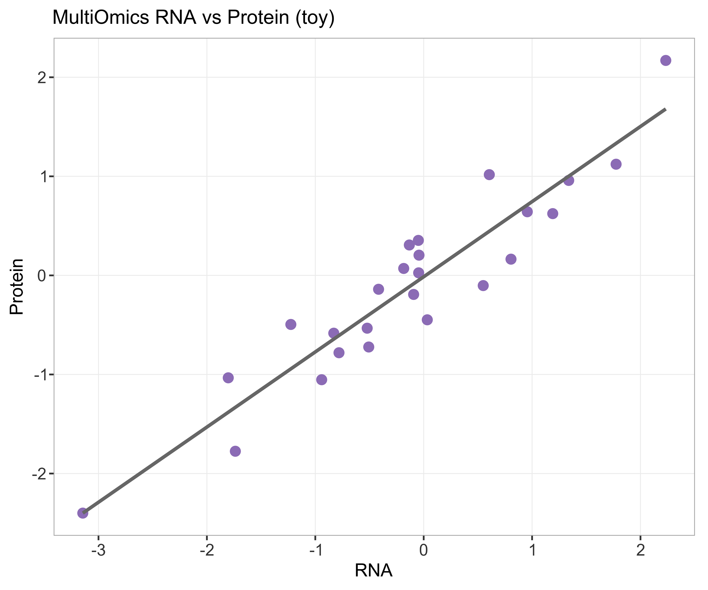

状态：PASS
已 source 本技能 脚本_scripts/: 运行多组学骨架_runMultiomicsSkeleton.R
toy=TRUE：本样例为可复现模拟数据，不可外推为真实生物学/临床结论。
详见 数据文件/DATA_SOURCE.md。
"skill","stage","n_rows","n_cols","n_samples","group_source","toy","data_provenance","accession","sourced_skill_scripts","notes","checked_at" "MultiOmics","post",25,3,NA,"toy multiomics",TRUE,"TOY",NA,"已 source 本技能 脚本_scripts/: 运行多组学骨架_runMultiomicsSkeleton.R","RNA-Protein","2026-07-18 21:28:31"

多组学联合相关玩具散点。
生成时间：2026-07-18 21:28:32 · 报告规范：统一交付规范_DeliveryStandards · 版本 v1